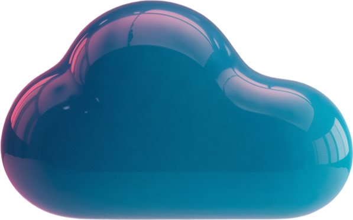
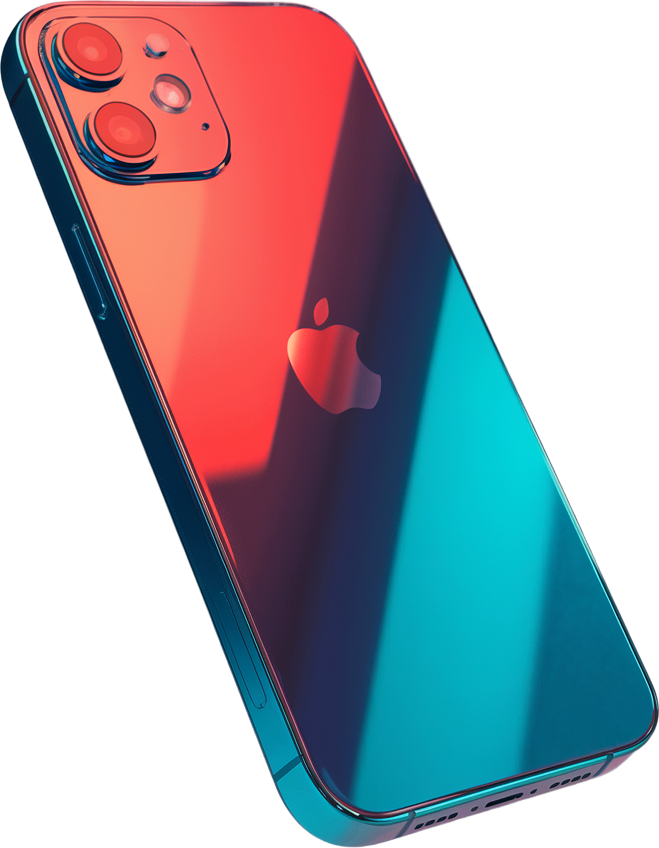
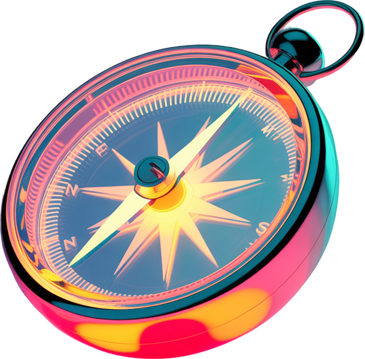
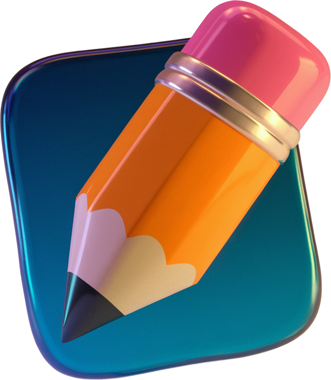
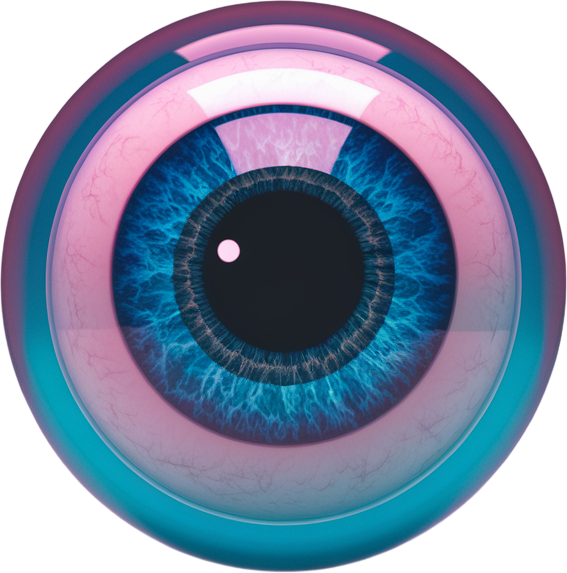

Engineering
Skalierbare Systeme.
Stabile Plattformen.
Verlässliche Lösungen.
pub.tech steht für Public Value Technologies GmbH – und unsere Leidenschaft, mit neuesten Technologien Produkte zu gestalten, die wertvoll für die Öffentlichkeit sind.
Von Datenstrategie über agile Produktentwicklung bis zu intuitivem UX-Design: Unser Portfolio vereint technologische Exzellenz mit nutzerzentriertem Denken. Wir entwickeln, betreiben und optimieren digitale Systeme, die stabil laufen, skalieren – und Menschen begeistern.

Skalierbare Systeme.
Stabile Plattformen.
Verlässliche Lösungen.
Daten, die Wissen schaffen.
KI, die sinnvoll unterstützt.

Apps, die bewegen.
Technologien, die verbinden.

Veränderung begleiten.
Teams stärken.
Projekte wirksam steuern.

Interfaces gestalten.
Marken erfahrbar machen.
Produkte zum Leben erwecken.

Zielgruppen verstehen.
Konzepte evaluieren.
Insights nutzbar machen.
pub.tech steht für Public Value Technologies GmbH – und unsere Leidenschaft, mit neuesten Technologien Produkte zu gestalten, die wertvoll für die Öffentlichkeit sind. Mit dem Bayerischen Rundfunk (BR), dem Südwestrundfunk (SWR) und dem Hessischen Rundfunk (HR) als Gesellschafter haben wir seit Ende 2022 unseren Fokus vor allem auf die ARD und deren Angebote.
… weiterlesenNeugierig auf unsere Erfolgsgeschichten? In den Referenzen finden Sie Projekte für BR, SWR, ARD online und weitere öffentlich-rechtliche Partner*innen. Von Streaming-Plattform bis UX-Research – hier sehen Sie, wie wir Technologie, Design und Public Value zusammenbringen. Viel Spaß beim Stöbern!
… weiterlesen